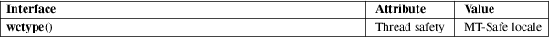

wctype − wide-character classification
Standard C library (libc, −lc)
#include <wctype.h>
wctype_t wctype(const char *name);
The wctype_t type represents a property which a wide character may or may not have. In other words, it represents a class of wide characters. This type’s nature is implementation-dependent, but the special value (wctype_t) 0 denotes an invalid property. Nonzero wctype_t values can be passed to the iswctype(3) function to actually test whether a given wide character has the property.
The wctype() function returns a property, given by its name. The set of valid names depends on the LC_CTYPE category of the current locale, but the following names are valid in all locales.
"alnum"
− realizes the isalnum(3) classification
function
"alpha" − realizes the isalpha(3)
classification function
"blank" − realizes the isblank(3)
classification function
"cntrl" − realizes the iscntrl(3)
classification function
"digit" − realizes the isdigit(3)
classification function
"graph" − realizes the isgraph(3)
classification function
"lower" − realizes the islower(3)
classification function
"print" − realizes the isprint(3)
classification function
"punct" − realizes the ispunct(3)
classification function
"space" − realizes the isspace(3)
classification function
"upper" − realizes the isupper(3)
classification function
"xdigit" − realizes the isxdigit(3)
classification function
The wctype() function returns a property descriptor if the name is valid. Otherwise, it returns (wctype_t) 0.
For an explanation of the terms used in this section, see attributes(7).

C11, POSIX.1-2008.
POSIX.1-2001, C99.
The behavior of wctype() depends on the LC_CTYPE category of the current locale.
iswctype(3)